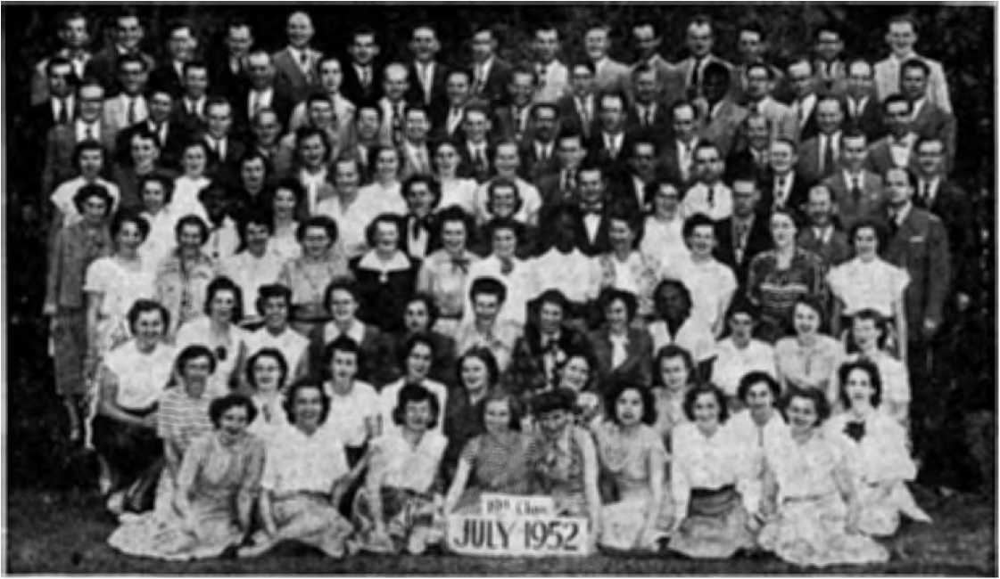

OCTOBER 22. 1052 semimonthtv
THE MISSION OF THIS JOURNAL
Ncwb sources that are able to keep you awake io the vital ]sn*es of oar time* mart be unfettered by censorship and selfiah interests. “Awake 1” hoe no fetters; It recognizes facts, faces facts, la free to publish facts. It is not bound by political ambitions or obligations; it is unhampered by advertisers whose toes must not be trodden on; it is unprejudiced by traditional creeds. This journal keeps itself free that it may speak freely to ycnx But ft does not abuse its freedom. It maintains integrity to truth.
“Awake f* uses the regular news channels, but Is not dependent on them* Its own correspondents are on all continents, in scores of nations. From the four comers of the earth their uncensored, on'the*acenes reports come to you through these columns. This journal’s viewpoint is not narrow, but is international. It is read in many nations, in many languages, by persons of all ages. Through its pages many fields of knowledge pass In review—government; commerce, religion, history, geography, science, social conditions, natural wonders—why, its coverage is as broad as the earth and as high as the heavens.
“Awake pledges itself io righteous principles, to exposing hidden foes and subtle dangers, to championing freedom for all, to comforting mourners and strengthening those disheartened by the failures of a delinquent world, reflecting sure hope for the establishment of a right' eous New World.
Get acquainted with “Awake Keep awake by reading “Awake I”
PnBLJBBSP By
watchtower bible and tract SOCIETY, INC 117 A<Iams street Brooklyn 1, N. u, s. a.
N. H- Knobs, President Grant Edited, S«er^*flry
Printing ttil> J„ue; >75-000
Limiuh Ih felt mmuIm it hUIiM:
Sgmini«)thl7—AfiluatU, EnftLih, Fiiftliih, FHindi, Wtnia, HolHmUiti. NofWn, Spanish, SwMlsh Monthly —Dani»h. Qreei, rortiiguue, umlniin.
Offices Teirljr sufocrlptta Eirte
tfX. HT Aten* St., Btvoldn L, R’T. tl
Aattralit, 11 BemfoM Rd., Str&thfieM, N.8.W, 8> Canada, IQ Irwin Atb. Toronto 5, OnUrlc tl Eb|Iui. 34 Cr*T«n T«rrice, London, W 2 Ta
Snth Artin, Frlute Bm. ?■<>> Ekn<W®Uln,
Tnuml 7b
FlVt cent* a C*>py
rtujffld t* to flfllce tn JOW «W1-tn in conpilsnc* with r*juJ*tlon« to swtntw life doUnr? of »on#r. Rendtuncet *r* icwphid it Brooklyn from awtriin wh«r« no office 1* located, fry Inl-emtii^rUl xnn>ey onJpr only. Subecriptlon mtw irr dJiTereirt arartCrle? oog ben la Coal arrowy, Nitta of welratiK (with reWl bhflhl is not it )tiil two lesues before sutatrLpUoa ex* pines.. Chlngt of addreu when lent to cur office may do expected sffecties wiiiiia oat aanUL Send your aid m vein *> now Bditreu-
EainmtJ jo Mmd-dia RMUer At Jf. T jU1 rf Sfjrrh 3, ntalod Ju U> 5. A-
CO NTENTS
|
The World Is Wide*Asleep! |
3 |
Brazil’s “Alcatraz” Revolts' |
17 |
|
The Quebec Hierarchy a Persecutor |
Man Hunt Gets Under Way |
18 | |
|
—Guilty or Not Guilty? |
5 |
Brutality and Corruption |
19 |
|
Catholic Principles and Democratic Law |
9 |
What Hope for the Future? |
20 |
|
Joliette’s Burning Hate Unmasked |
10 |
Keeping Warm the Ancient Way |
21 |
|
Courageous Judges Support Jehovah’s |
The Chinese Heating System |
22 | |
|
Witnesses and Democratic Liberty |
14 |
The Persian and Roman Heaters |
23 |
|
How to Produce Fruits Pleasing to God |
15 |
Our Fine Finny Friends of the Sea |
24 |
|
“A Good Many Congressmen” |
16 |
Gilead’s Nineteenth Class Graduates |
27 |
|
Juv " bookie |
16 | |
Watching the World |
29 |
“Now it is high time to awake.”—Romans 13:fl v-
VttlMme XXXUl" Brooklyn? N. ¥., October 22, 195*~~^ ~ ~ Number 20
U/ANCE upon a time there was a world/* VJ a future tale might begin- “It was a world abundant in resources, weD-fumished with brains, boasting of its freedom for liberal democratic rule, plentiful in religions and very, very progressive. But, strangely, its many resources were hoarded by the ‘have* nations and traded as political pawns to the ‘have not' nations. Every time its brainy scientists produced a new cure to sustain life, they found ten new ways to destroy it* That world’s liberal democracies liked to chant a favorite cry: ’Freedom fj*om fear!’ Still they quaked in fear while the atom bomb, which they had introduced to the world, was being mass-produced on both sides of an East-West, hot and cold iron curtain. Furthermore, these democracies that had claimed so lofty a moral standard were found, upon investigation, to be eaten through by gamblers, gangsters and corrupters of public office. There was, it could be said, a religion for everyone; yet in that so-called modem world creeds and doctrines dating back to musty ancient paganism were passed off as Bible truth. Indeed, there were many ways in which that ‘very progressive* world looked like a relic from the Dark Ages. But worse, far worse than all of this, the people did not seem to care!”
Only so far, as the honest contemporary reader must admit, this is np fairy tale. On the domestic side this startling public apathy has come painfully into the limelight by corruption exposures. David L. Cohn, in the New York Times^ October 28, 1951, reported: “The Kefauver committee has shown the citizen how officials of his own state and town perhaps—men whom he considered ‘nice fellers*—connive with gangsters.”
But it is perfectly obvious that such evils could not flourish so abundantly unless the highest levels of government were either winking or dozing. Said Mr. Cohn;
“Some of the men around President Truman, whose personal honesty remains unsullied through the most ruthless investigation, are unquestionably ward heel* ers in various disguises. I regard his loyalty to them as misguided. For, however admirable the quality of loyalty, the loyalty of a president must be, not to his friends but to the people of the country.”
In international relations one would expect anything but apathy where there is so much fear. But nonetheless it is there. It is there because the fear is misplaced. Everyone is afraid of the A-bombi So afraid are they that they conclude only by building more of them faster than anyone else can they be safe. So they greedily, almost frantically, hoard their resources, goad on their scientists to more deadly ingenuity, their production lines to stepped-up activity. Their trust is in material atoms. Despite their many Christian professions and expensive cathedrals t their trust is not in God, whose Word says: "We keep our eyes, not on the things seen, but on the things unseen. For the things seen are temporary, but the things unseen are everlasting,”—2 Corinthians 4:18, New World Trans.
It is this attitude that has caused worldlings to write the conclusion to the talc related earlier, the only part that is truly a myth. The only end to the present order of things that they can visualize is a blasting of mankind from the face of the earth through a global atomic war contrived by men. There Is a morbid, paralyzing fear of falling behind in the international arms race. But there seems to be net the slightest dread of falling from God’s favor. Newspapers which by policy play up sensational sex crimes and fiction books of the same line achieve record-shattering circulations. The public devours their contents but exerts little or no pressure upon its elected representatives for congressional debate on these dire social problems or for expensive appropriations io halt crime comparable to those made to halt aggression. Instead of an acute public consciousness of the evil, more and more parents seem to go on caring less about where their children are, and crime drifts more than ever into juvenile hands. Divorces soar as immorality corrupts family life; but all one hears is the tacit suggestion of some "wise” ones that premarital sex relations be legalized and approved. Yet these things as well as idolatry, spiritism, jealousy, sectarianism, drunken bouts, etc.—all common practices in the world today—are explicitly condemned by God’s Word. And his judgment and power, not any human act, will bring an end to this wickedness. —Galatians 5:19-21; Jude 14,15.
Surveys show the Bible, best seller month by month, year after year, is not read to the point of knowing its simplest teachings or even the names of its most prominent books! A Gallup Poll survey, published more than two years ago In the British newspaper, Netos Chronicle, revealed that only three persons out of five, or 60 per cent, could name the four Gospej books, Matthew, Mark, Luke and John. One cut of four could not name even one. By comparison, the remark last November by the Roman Catholic archbishop of Sydney, Australia, that Pope Pius XU, most influential religious adviser in all Christendom, "is a completely spiritual man” sounds hollow indeed. In the News Chronicle report it was shown that of England’s four leading sects the greatest Bible ignorance was evident among Roman Catholics. Only 51 per cent of the churchgoing Catholics interviewed knew the names of all the Gospels. More than a third, 36 per cent, did not know one of them:
Wrongly taught in the same way, it is understandable how7 the Jewish nation rejected Jesus, though he completely fulfilled every Scriptural description and expectation of the promised Messiah. Tie roundly condemned the human traditions which the scribes and Pharisees had substituted for God’s Word. (Matthew 23:23, 24) Just so today arc true Christians, close followers of Christ Jesus in word and deed, often turned away from the doors of Christendom's religionists with the yawning, lackadaisical sham excuses, "I am too busy,” "too tired,” "too sick” "too prejudiced,” "preoccupied,” or "I just do not like to read”. Thank their false religious training for Their care-nothing, say-nothing, do-nothing attitude toward the Bible. Only the wise are alert to the times and to the truthfulness of the words: vIt Is already the hour for you to awake from sleep, for now our salvation is nearer than at the time when we became believers.”—Romans 13:11, New World Trans.
THE QUEBEC HIERARCHY A PERSECUTOR at 'Hot tytiity?
By “AwaX*!” correspondent in Canada
THE pages of history are replete with accounts of persecutions of minorities, and very frequently these have involved the Roman Catholic Hierarchy. At times she appeared as the persecuted, but more often as the persecutor. During recent years, in measured expression condemning the principle of coercion in matters of faith, the Hierarchy’s supreme pontiff has bitterly denounced the persecution of Roman Catholics in Communist lands.
But can these words of the religious pontiff be understood to mean that he deems persecution to be basically wrong? Or does he merely consider it wrong to persecute Catholics, while other persecutions may be winked at, condoned and even applauded? The sincerity of statements cannot always be gauged by the form of words used; rather, the course of action tells the true story. Christ Jesus said: “By their fruits you shall know them.” (Matthew 7:16-20, Douay) Does her course of action harmonize with her “fair speeches” and demonstrate her fruits to be ‘fine fruits’? Let the facts speak for themselves.
Actions Speak Louder than Words
The Roman Catholic Church officially condemns persecution, yet in Catholic Quebec there has been carried on for many years such persecution and heresy hunts as have never before been witnessed on this North American continent. Insults, threats, loss of livelihood, arrests, prosecutions by the hundreds, mobbings, beatings, and even shooting, have been dealt out to the faithful ministers of Jehovah’s witnesses as they patiently and peacefully sought to preach the gospel of God’s kingdom to the French-Canadian people and to open to them the pages of their own Catholic Bible, largely forbidden to them by their own priests.
So hot did this cruel campaign wax in 1946 that Jehovah’s witnesses published a burning protest against the riots, violence, and priest-inspired outrages under the title “Quebec’s Burning Hate for God and Christ and Freedom Is the Shame of All Canada”. Quebec authorities never seriously tried to deny the shameful facts therein recounted. All they said was: “Even if it is true, it is seditious for you to say so/' Maurice Duplessis, Quebec’s dictator-premier, roared out that he would run Jehovah’s witnesses out of the province. So over one hundred charges of seditious and defamatory libel were brought against the witnesses.
One of these cases was appealed to the Supreme Court of Canada, and a decision was handed down in favor of the witnesses. The Quebec authorities, both clerical and legal, were thereby subjected to a real spanking by reason of the blistering criticism leveled against them by the courageous and clear-thinking justices of the Supreme Court. Jehovah’s witnesses were cleared of the charge of sedition, and it was even pointed out that their criticism of conditions in Quebec demonstrated both charity and restraint, in view of the disgraceful sufferings they had been obliged to undergo at the hands of persecuting Catholics.
The Supreme Court having declared Jehovah’s witnesses innocent, it might have been expected that the numerous other false charges against them would be withdrawn. But not so in Quebec- Action Catholique., official voice of the Church, insisted that “it appears to us that the provincial and municipal authorities need not feel obliged to free the hundred other witnesses detained under the same charge”. Thus needled by the Church to continue his persecutions (and, remember, this is the same Church that condemns persecution of her own children), Duplessis announced that he would continue prosecuting the other cases.
One case in Montreal was thereafter tried, and he lost He brought another to trial, and it was dismissed after only a few minutes’ hearing—a real fiasco. The judge thereupon threw out all other similar charges pending in that particular court. Had the premier-attorney general learned his lesson? Oh, no! Other sedition cases were brought before the court at Amos, Quebec, Here was an intelligent and courageous young judge who refused to be stampeded by the prejudice and coercive tactics of the attorney general. These cases, too, were dismissed.
Duplessis retired to lick his wounds, but still refused to bow to the decrees of the courts. Demonstrating his contempt for justice and liberty he next actually instigated new charges against the same Christian people who had just been liberated on the sedition cases. They were now charged with ‘publishing false news’. This was a new one! Duplessis flew one of his chief inquisitors up to Amos from Montreal, a Catholic fanatic named Jasmin, who has for many years specialized on persecution of Jehovah’s witnesses. The same judge, Mr. Justice Drouin, without even going to trial, ruled against the attorney general, ruling in substance that *the law does not allow a man to be charged twice for the same offense. The Crown tried once and lost. Its rights before the court on this matter are finished. Charges dismissed’. Just another lesson in the long and difficult task of educating the attorney general in law. And the score: He has not succeeded in maintaining a single one of the 100-odd libel charges against Jehovah’s witnesses.
Priests and Persecution
Legal efforts have totally failed to stop the witnesses in their preaching work, because when a fair hearing is accorded Jehovah’s witnesses before the courts of justice, priests and persecution are dragged into the open and defeated. Mob violence, that most cowardly and evil abuse of majority power, is next employed. This is true especially in small Quebec towns and villages where the priest’s word is law and little pan happen without his approval and blessing. Many priests, in just such circumstances, have demonstrated a proud and aloof disdain for law and order, as is shown in the following experiences.
The first is reported from Coaticook, Quebec. The police had tried prosecuting Jehovah’s witnesses and had been thoroughly and soundly trounced in their own local court. Subsequently a young lady missionary was calling from house to house in the town, speaking to the people about the Bible. She writes:
“At the fourth door I had been preaching for about fifteen minutes and the young woman there was very nice and agreed with everything I was saying. All of a sudden a nervous priest rushed into the house and without even greeting the lady of the house (who was shortly expecting a child) grabbed my Bible out of my hands and asked me what it was. I explained it was the Crampon (French Catholic) Bible and asked if he did not recognize his own Bible. He asked if I was selling Bibles, so I explained how I was encouraging Bible study rather than selling Bibles, Then he ordered me out without even consulting the lady of the house, who still remained polite but very nervous. I pointed out that this is a democratic country. He replied that the Catholic Church is authoritarian and not democratic; then he grabbed my arm and pushed me 4)ut of the house. Next he called some teen-age boys and instructed them to follow me and to tell the people not to listen. I decided to leave the area because a mob was gathering and no police came. I asked the enraged priest, who was still following nervously at my heels, if the police knew about this. He replied that they did know but refused to come, so he came himself to chase us away. I tried to reason with him that the police did not come because they knew we were within the law. His answer: 'The Catholic Church is the law In this province and I will not tolerate Jehovah’s witnesses in my parish.’ ” This incident, remember, involves a priest of the very Church that so loudly Condemns persecution.
Priests, especially in the remoter sections of the province, will stop at nothing to maintain their dictatorial powers over the common people, even at times provoking criminal activities. In Vai Senneville, a small village in Northern Quebec, Jehovah’s witnesses were peaceably calling from house to house, without any objections from the citizens. Soon the priest came running in great excitement and ordered them out of town. Taking hold of one minister by the arm he told him he was under arrest. Upon being asked for his authority to arrest people the priest answered: “Come along to my house, and I’ll show you my authority.” Two ministers, a lady and a gentleman, went along.
On arrival at the house he went to his desk, opened it, and pulled out a pair of handcuffs! Remember, this small-town autocrat claims to be a shepherd of the Christian church, a follower of the meek and lowly Jesus of Nazareth. In great agitation he ’phoned the police. They would not or could not come. Frustrated, he then swore, threatened and yelled like a maniac, outrageously insulting the lady minister, inferring that she was a woman of bad character, though he did not even know her and had never seen her before. Then he said: “You will either get out of this town or I will turn the mob on you and you may not get out alive.” Outside the house he continued his loud threatenings and headed up the street to get the mob of about fifty men standing around the church to go into action. A charge of intimidation under the Criminal Code has been laid against this priest.
In this very same district another Catholic priest and a Catholic postal employee were recently convicted of the criminal offense of interfering with Her Majesty’s mails when they were caught destroying Baptist pamphlets which were being sent out in the mails. Their actions show there is nothing to which these wolves in shepherd’s garb will not stoop. Surely in a great religious organization which boasts of unquestioning obedience within its ranks, if the head man of that organization has condemned persecution, it would be expected that the priests would refrain from all per-secutive activities or at the very least abide by the law! Evidently there is one policy for propaganda releases and another for practical application.
For instance, at Greenlay, Quebec, a minister of the nearby congregation of Jehovah’s witnesses accompanied by his wife went to visit one of the members of his congregation resident in this village. A Catholic mob quickly surrounded his car where it was parked just outside the house. He was told: “Get out of here or we’ll wreck your car.” Then the mob-organizer, the priest no less, with another mobster, seized the visiting minister (a small man) bodily and dragged and pushed him to the bridge leading across the river out of the village, the mob meanwhile following like a pack of bloodhounds, and armed with stones, At the right moment the priest and his helper released the minister and then shouted to the mob: “All right; start throwing.” Thus a modern-day preacher of righteousness was stoned, injured and left bleeding, at the behest of this sanctimonious fomenter of hatred and violence.
Examples of mob violence and incitement to violence on the part of the Roman priests are numerous. A Quebec city mob of about one hundred students attacked some ministers of Jehovah’s witnesses, who, before subsequent rescue by the police, were badly beaten by these Catholic hoodlums. But who do you suppose inspired this? Read it, if you please, in the following quotation from UAction Catholique (March 28, 1952), Roman Catholic publication, under the heading “Jehovah’s Witnesses Found the Soup Hot”:
“With the coming of spring it appears that Jehovah’s witnesses have undertaken a new propaganda campaign in the old capital. However, the reception is hot always warm, and five members of the sect, all men, were yesterday received in St. Fidele parish like dogs at a race track. The soup was so hot, they had to ask the protection of the police to get out of the quarter. It all arose when a woman informed the vicar of the parish that Jehovah’s witnesses had come to importune her at her home with literature. [Which was not true; they merely passed with the Bible.] The vicar was giving a catechism lesson to his pupils at the St. Fidele high school and told them that Jehovah’s witnesses were going around the parish distributing pamphlets. . . . When class was Jet out at 11:30 a,m. yesterday, the students saw five men going from door to door. • . . The students to the number of about a hundred hooted loudly. An avalanche of snowballs fell on the witnesses, Then blows followed. One of the witnesses was slightly injured in the face. [The facts here are nicely watered down to make it look as if the young thugs really didn’t seriously damage anyone!] Then the five men began to retreat prudently toward their car. Since a group of boys was trying to turn the latter over on its side, the witnesses of Jehovah ran hastily toward a bus of the Quebec Power. The driver, fearing for the safety of his passengers, refused to let them in.” 1/Action Catholique did not know that the automobile which the mobsters were so industriously trying to upset was in fact owned by some French Catholics who were in it at the time, but were being mistaken for witnesses. So vicious was the attack on the car and party that the next day one of the occupants, a French Catholic lady, was still in bed suffering from nervous shock.
To continue quoting from L* Action: “The witnesses had to seek shelter in a hairdressing salon whence they called for aid and protection of the police to enable them to get out of the quarter. . . . This is how a brusque ending came to an attempted propaganda campaign in Umoilou quarter. It is hoped that the witnesses found the pill so bitter they won’t come back.”
Take note especially how proudly, and with evident glee and relish, this disgusting report of a cowardly crime by Catholic-trained youths is presented. Both radio and press reported the happening with the same enthusiasm and merriment. No hint is there of any disapproval in the above quotation from a religious publication. No reprimand of the students for their cowardly, unchristian action. No word of caution even to the priest upon whose instructions they acted. No suggestion even that the police should properly enforce the law against such a bunch of young hood’ lums. This official organ of the Church has nothing but amused approval for the young lawbreakers for whose education (or lack of it I) the Church is responsible*
Catholic Principles ond Democratic Law
^Adiq'
ScHQOU<. COUH1-S Ory f
A
The Cadthnhc. Church contsvAs tdMcattaft in Quebec* Most of the judges, lawyers, police officers and other administrators in the province are therefore steeped in the authoritarian philosophy of Catholicism. When they are called upon to administer the civil law of a democratic state such public officials are faced with a serious conflict; for the civil law of Quebec recognizes tolerance and equal rights for all religions, while the teachings of the Catholic Church do not. Particularly in small towns where the priests rule supreme, the tolerance and equal liberty established by law are overborne by the bigotry of the clergy. The law of Quebec, which judges and police officers are sworn to uphold, guarantees "free exercise and enjoyment of religious profession and worship, without discrimination or preference", to every citizen. But the Catholic religion, which most of these same judges and officers are bound to maintain, flatly denies equal rights of worship.
"Infallible” Pope Leo XIII stated the Catholic view of religious tolerance in his encyclical Immortal# Doi' "It is not lawful for the state ... to hold in equal favour different kinds of religion.” The same view is expressed In the Jesuit publication Cwi-litd Catolica: "The Roman Catholic Church must demand the right of freedom for herself alone ... in a state where the majority of the people are Catholic the church will require that legal existence be denied to error [that is, any belief other than the scrme countries Catno'fics will be obliged to ask full religious freedom for all, resigned to being forced to co-habitate where they alone should rightfully be allowed to live.”
Civil law grants equalityto all faiths, but the Catholic Church teaches that no other religion has any real rights. A judge or administrator who feels compelled to uphold both is on the horns of a
dilemma. Church interests run contrary to the public interests.
This conflict, in practice, is to be seen in what happened last winter at St. Hya-cbxtkvi, StYoiBYf-s witnesses
arranged to hold an assembly. An auditori-urn was rented, contract signed. On instructions from the local bishop there began a terrific campaign of pressure upon the hall owner to force cancellation of his contract. The priest demanded that it be broken; the local member of the provincial legislature and the local member of the Dominion parliament made the same demand; the mayor threatened to cancel his license, and advised that if the assembly weutthrnui^bLb^ might as well leave town, for his business would be ruined anyhow. Under instruc-
tions of the priests there were many threatening letters and telephone calls; so many that the owner ultimately had his phone service cut off. Finally the pressure was so great that he gave way and broke the contract. His lawyer (who is sworn to uphold the civil law of sanctity of contract and freedom of assembly and worship) hypocritically sought to justify all this denial of elementary honesty and human decency by the classic Catholic view that “error has no rights”. Otherwise stated, ‘Since you are not Catholic, your religion has no rights and whatever we do is justified. *
Jehovah’s witnesses applied for a court injunction to prevent the contract’s being broken. The hall owner and his attorney came to court and admitted that they were in breach of contract; they could not, in face of the plain facts, pretend they were in the right, but contended that the court should order them to pay damages rather than have St. Hyacinthe suffer the supposed terrible evil of allowing Jehovah’s witnesses to freely worship God there. The attorney contended that they feared violence from the Catholics. To Justice Maurice Lalonde it was explained that, should he accept the foregoing argument, it would be tantamount to finding that the people of St. Hyacinthe were so uncivilized and bigoted that it would not be safe for anyone but Catholics to hold meetings there. He was not prepared to meet the issue, and hunted around for a technicality. Lalonde proceeded to render a decision against Jehovah’s witnesses, which was unsupportable in law or fact. Was now this decision an effort to enforce the policy of the Catholic Church and the local bishop that no one but the Catholics has any rights of worship?
Another example of judicial decision displaying the utmost contempt for liberty and even human decency is a case at
Chapeau, Quebec. A few of Jehovah’s witnesses had gathered to hold a Bible lecture in a private home one quiet Sunday afternoon. “Father” Hairston, the local priest, found out about it and was greatly enraged at the idea of anyone’s daring to hold a Bible lecture in his bailiwick; and so he immediately telephoned the provincial police insisting that they come and break up the service. After all “the Roman Catholic Church must demand the right of freedom for herself alone”.
When the police arrived there was no one outside, no crowd, no disturbance. Those inside were quietly listening to the minister reading from the Bible. The three members of the provincial police entered this peaceful home, not like peace officers in a democratic state, but rather like the ruthless gestapo of a dictatorship. Seizing the Bible out of the hand of the minister they broke up the meeting, ordered everybody out of the house, took the minister away in their car by force and ordered him to get out of the province. This is not Communist Russia we are discussing, mind you, but Catholic Quebec, where the bigoted, antifreedom views of the clergy even control many of the law-enforcement agencies.
Legal action was taken by the householder against the police for this outrageous invasion of a Christian home. None of the important facts were in dispute, but Roman Catholic Justice Fortier dismissed the proceedings against the police officers, holding that their actions were quite justifiable. Which law do you suppose this judge was following: the narrow, bigoted law of the Catholic Church, or the democratic principle of equal rights and liberties for all? The case has now been appealed.
Joliett&s Burning Hate Unmasked
Many will recall the disgraceful kidnaping at Joliette, Quebec, of two lady missionaries of Jehovah’s witnesses. (See
Awake! April 8, 1950.) They were kidnaped by a mob of Roman Catholics and driven to Montreal late at night; Unsuccessful efforts were made to put them in prison, and, finally, they were abandoned in the early hours of the morning with dire threats of what would happen to them should they ever return to Joliette. Nevertheless, they did return, whereupon the Roman Catholic Knights of Columbus circulated a false petition against them. When the town council approved this petition, local mobsters viewed this as a green light and proceeded to organize another riot, which compelled these peaceful missionaries to leave the district. Thereafter legal proceedings were begun against prominent citizens of the town who were responsible for signing the false petition, and against the local newspapers which were so liberal with their libelous statements concerning these two faithful Christian women.
The case came on for trial in April this year and served to unmask ■ the vicious, scheming priests who were desperately striving to deny freedom and equal rights of worship to those of another faith. One of the local papers, L3Action Populaire, which had been most blatant in its accusations against the two Christian missionaries, and had published material that was most unprincipled and baseless, has for editor no less a person than AbbG (Father!) Leo Forest The triAl revealed the evil hand of this priest in every move against these two young women. His newspaper lyingly accused them of being sedi-tionists, organizers of disorder, anarchists, encouraging immorality, and of making large sums of, money out of their missionary work. His paper warmly congratulated those responsible for the kidnaping and for the other outrages. When called to account before the court for these libels, L3Action Populaire sought to excuse itself, on the ground that “it is the Catholic organ of the diocese of Jollette” and it had a duty to “make known the Catholic reply to attacks against the Church”.
Being a Catholic organ may explain but certainly does not excuse lies and libel. However, the only reply ever made by LfAction Populaire was false accusation and misstatements. Perhaps that is the Catholic reply to any attack against the Church. One of the kidnaper^rougbt into court made the same defense. When asked why he participated in the criminal offense of kidnaping he replied, as though it were quite sufficient to justify his action, “Because I am a Catholic.”
In court it was pretended that these two ladies constituted such a menace to the welfare of the town that extreme action had to be taken. Surely a “welfare” so easily upset must have been very delicately balanced! The evidence further revealed that warnings had been given repeatedly from the pulpits, and leaflets written by priest Forest had been circulated to every house in town. Spying was resorted to. One night these two missionary ladies were invited to a home to explain their Biblical views. There they met a man who was introduced as a garage mechanic. At the close of the visit they were invited back one week later for further discussion. This proved to be a trap. The man dressed as a mechanic was no other than priest Leo Forest. When the unsuspecting missionaries kept their appointment, kidnapers awaited them. A lawless mob had been informed of the rendezvous so they could be present to effect their cowardly and criminal purpose. Who do you suppose notified and arranged for these lawbreakers to be present?
Priest Forest clearly showed where he stood when his newspaper “warmly co -gratulated the young folks who made tl e witnesses understand their place was ho longer at Joliette”. He said the two ladies had been “politely but severely expelled from Joliette” Kidnaping (which caryies a penalty of up to 25 years in the penitentiary), violence, threat of rape and other abuse that caused these young ladies to suffer from nervous shock for months thereafter—all this—he describes with Jesuitical hypocrisy as being “politely expelled”. There is no doubt that it met with his unqualified approval. But there is more! His paper further says: “What happened on Wednesday December 14th [the kidnaping] and Monday the 19th [petition and riot] is the fruit of serious reflection [it was no accident, but well-organized] and followed an investigation [the spying of priest Forest].” The priest-editor admits these crimes followed his own investigation.
But there is still more! When the Knights of Columbus found that the first kidnaping did not accomplish its purpose because these courageous missionaries returned to Joliette to preach, a special meeting was organized in the K. of C. Hall. It was attended by about one hundred of the leading citizens, doctors, lawyers, priests, notaries, etc., with the object of hitting upon a plan to rid the town of these two (only two) young women with Bibles. One hundred men against two women—a fair sample of Knights of Columbus courage. And who do you think was the first speaker? Priest Forest, of course! After hours of conference they came up with the idea of a petition and got their lawyer Dugas to draft it. Everybody then signed. Among other things the petition accused these respectable and decent women of ‘encouraging immorality* and ‘fomenting disorder*. When the case came on for trial the signatories of the petition one after another got on the witness stand and parroted the same story: “I signed the petition because I believed it to be true.” “Who told you?” In every case the reply was: “The priest/*
And how was it these ministers were supposed to be fomenting disorder? The only thing they did was to go from house to house teaching the Bible truths. Surely that is not such a terrible crime! The last to testify was priest Forest, and he said in explanation of this unfounded charge against the ladies: “Well, people used to telephone me about them’* Small wonder they did, for were not these ministers being preached about in the churches, in his own leaflets spread around town, in his official organ of the Church, and in specially called meetings of his gallant Knights of Columbus? In the face of his own actions, and the disorders directly resulting therefrom, he hypocritically blames others for fomenting disorder. Surely for an exhibition of all, this takes the prize!
To add insult to injury this specimen of Catholic priesthood had the audacity to accuse Jehovah’s witnesses of being subversive. Why? Because they believe and teach that this world belongs to the Devil. Even a priest by casual reference to the Scriptures could have learned that the Lord Jesus did not deny the Devil’s claim to the rulership of this world’s kingdoms: “And the devil led him into a high mountain and shewed him all the kingdoms of the world in a moment of time. And he said to him: To thee will I give all this power and the glory of them. For to me they are delivered: and to whom I will, I give them. If thou therefore wilt adore before me, all shall be thine. And Jesus answering said to him. It is written: Thou shalt adore the Lord thy God, and him only shalt thou serve.”—Luke 4:5-8; Matthew 4:8-10, Douay.
Would this make Jesus subversive in the view of priest Forest? Does this representative of the Quebec Catholic Church manifest any real respect himself for the law of the democratic state in which he resides? His obvious complicity in the lawbreaking which had taken place as well as his encouragement of it clearly demonstrates his contempt for democracy and his readiness to undermine it at the slightest provocation. On the face of it, who do you think is the subversive one? When he was faced with some of the inconsistencies between his sworn testimony and the statements made in his newspaper, priesteditor Forest gave a pitiful exhibition of squirming, equivocating and pirouetting from one uncertainty to another until ultimately he had to be assisted from the witness stand.
Lawyer Dugas then adopted the unheard-of procedure of getting up from the counsel table and going into the witness box, to himself defend the libelous petition he had drafted. He swore he believed it all to be true. When asked why, he replied: ‘Well, the priest told- me? He admitted giving as his opinion that these ladies could not be arrested, but in the next breath he tried to support the misstatement in his petition that they were guilty of criminal offenses. “Why didn’t you have them charged?” He replied evasively that since the Supreme Court had acquitted Jehovah’s witnesses of the charge of seditious libel he thought there would be no use laying any other charges against them. The real fact was that he well knew the alleged criminal offenses by these two respectable young women were the figment of imagination, and that his sworn statements were untrue. “By their fruits you shall know them,” and the fruits produced at Joliette are rotten and a stench in the nostrils of decent men.
The trial judge Justice Joseph Jean was inclined to the view that because the majority of the people of Joliette already believed these stories before ever they were published in the newspapers, the reputation of the plaintiffs could not be further damaged by their publication. It was pointed out to him, however, that if rumors and public opinion can make a defense to libel, we might as well close the courts and hold mob trials on the street or inquisition trials in the Knights of Columbus hall. The purpose of the law is to get dt the truth and facts, not lies and rumor. The only legal defense to libel is that the charge stated is true, not that somebody believed it to be true because of the inisstatemeirts of some prejudiced priest. Judgment on this case is expected shortly.
Did you ever read of the witch hunts of medieval times? Well, do not conclude that those times are gone and finished with, not until you have considered the following report on happenings at St. Eustache, Quebec, not far from the city of Montreal. Some local authorities had the idea that they were the law and that whatever they said the people must obey regardless of what the law provides. A group of Jehovah’s witnesses preaching in this town was arrested and held under a high bail upon this amazing charge: “That in the town of St. Eustache contrary to the instructions of the authorities of the said city they did circulate in the streets of the town stopping from house to house to teach the Bible and spread the doctrines of Jehovah’s witnesses, contrary to the Criminal Code?’
There is no such offense in the Code, and the case obviously had to be dismissed. But can you imagine in this twentieth century, in a democratic country, that citizens should be charged with the crime of ‘teaching the Bible’! Clearly this is an effort to revive the medieval Catholic law on heresy and engraft it onto the civil law of Canada. By their course of action those involved in laying such fantastic charges are in effect loudly demanding: “Turn back the clock to the good old Dark Ages!”—and that means mock trials, dark dungeons, chains, the rack, fagot and fire.
Courageous Judges Support Jehovah’s
Witnesses and Democratic Liberty
Some clear-thinking judges of the province of Quebec, however, refuse to be stampeded by the heresy-hunters. They have been courageous enough to recognize that Jehovah’s witnesses are sincere Christian ministers who are lawfully and peacefully engaged in preaching the gospel of God's kingdom, and that there is no excuse for the persecutions they are suffering. These decisions established the contention of Jehovah’s witnesses that they are a lawful religious organization entitled to worship God in freedom the same as anyone else in Quebec, Their enemies, eager to engage in religious persecution without suffering from the stigma that ordinarily attaches to such wrongful activity, have tried to excuse themselves by pretending that Jehovah’s witnesses are not a religion anyhow. They have even claimed that the nonprofit, frequently gratuitous, distribution of printed sermons by Jehovah’s witnesses in the course of their missionary-evangelistic work is really commercial bookselling. Such an argument is made in obvious defiance of the facts, and as a camouflage for pushing the campaign of persecution by prosecution.
The above argument was used in, the Recorder’s Court of the City of Lachine when that municipality sought to stop the ministry of Jehovah’s witnesses by prosecuting them for failure to obtain a commercial distributor’s permit The lower court convicted, and the cases were taken on appeal before the superior court. Mr. Justice Smith went into the matter very thoroughly and recognized the justice of the plea by Jehovah’s witnesses that they have a right to engage in their peaceful Christian work without the license demanded by the City of Lachine. When the facts respecting the evangelistic ministry of Jehovah’s witnesses were fairly examined without prejudice by this judge, then he quickly disposed of the heated contentions of the City, which was really using licensing as an excuse for religious discrimination. Two such decisions against Lachine and which declared the preaching of Jehovah’s witnesses noncommercial were handed down by Justice Smith on April 3, 1952.
This identical argument that Jehovah’s witnesses are not entitled to the same liberties as other faiths arose also in a legal controversy with the City of Quebec. The City had passed a bylaw, directly aimed at the witnesses, that forbade distribution of pamphlets or printed sermons in the streets of Quebec without a permit from the chief of police. Jehovah’s witnesses contended they had a right to preach to people by means of printed sermons without a permit from anyone, and that the demanded permit was an abridgment of freedom of worship guaranteed by law.
The City contended Jehovah’s witnesses were not a religious organization and called a Catholic priest, a Jewish rabbi, and an Anglican ^Episcopalian} clergyman as ‘expert’ witnesses to prove it. This is somewhat like calling in the Pharisees and Sadducees to prove that Jesus was not an ordained minister of God. The story of this trial is recounted in Awake! magazine (issues of January 22 and April 8, 1949). Here one is also forcefully reminded of the old-fashioned heresy trials of the Middle Ages, when the orthodox clergy would give testimony against anyone who dared accept the Bible instead of clerical dogma.
The trial judge gave his decision against the witnesses, and the case was then taken before the five-judge Quebec Court of Appeal. A three-member majority ruled against the witnesses, but one Catholic judge, Mr. Justice Bertrand, wrote a dissenting judgment in favor of Jehovah’s witnesses that is one of the most courageo us, outstanding and learned judgments on religious liberty in Canadian history. Justice Bertrand recognized the rightness of the claims of Jehovah’s witnesses and held that they have a right to freedom of worship without discrimination or preference. His earnest and forthright analysis of the matter is certainly a rebuke to other judges who have weakly and unprotesting-ly allowed this persecution to continue. Justice Bertrand even reminded his fellow Catholics that they had been granted liberty in Canada at a time when they were in the minority, and that they should now be prepared to show the same tolerance toward other minorities.
How to Produce Fruits Pleasing to God
The Catholic Douay Bible tells us, at Galatians 5:22, that “the fruit of the Spirit is, charity, joy, peace, patience, benignity, goodness, longanimity, mildness, faith, modesty,, continency, chastity”. Certainly it would be hard to contend on the basis of the foregoing facts that the Quebec Catholics, especially priests, responsible for these terrible actions are showing these fruits of the spirit of Almighty God. It would also be difficult to explain why an organization, which outwardly appears so powerful, would stoop to such things. Surely if it is really, as it claims, the Church of Christ, founded on an impregnable rock, it has nothing to fear. After all, the Roman Church in Quebec controls the schools, the newspapers, radio stations, churches, most of the literature—in fact almost every medium for reaching the minds of the people. Surely all its teaching and preaching is not so useless and such a total failure in influencing the people that they will leave the church the minute some of Jehovah’s witnesses come around with a Bible or some pamphlets!
Such a view makes a most unflattering estimate of the teaching ability of the priests. Are the Catholic people, then, so lacking in faith that they cannot be trusted to talk to anyone else? The terrific and even criminal lengths to which priests will go to get rid of a few Jehavah’s witnesses with Bibles is actually making the Roman Catholic Church look silly. It was said by the Ottawa Citizen, speaking of Jehovah’s witnesses: “Persecution gives color to its denunciations of Quebec's "burning hate'. Roman Catholicism begins to acquire an undignified resemblance to an elephant frightened by a mouse?’
Many earnest, God-fearing Catholics hate these things and wish they were different. Many of them have a fine sense of justice, decency, and tolerance for minorities. They cannot understand the insane fear and bigotry of their priests who sponsor disgraceful persecution and even use children and heedless, mob-minded youths to do the dirty work that older, more Intelligent people will not do.
The appeal of God’s Word and of Jehovah's witnesses in this publication is to such fair-minded people. They know these persecutive measures are unchristian and that they bring shame on the decent people of Quebec. We appeal to such people of good will to put a stop to this unreasoning heresy hunt. This appeal is written, not vindictively, but with a desire to clearly state the facts and point out the wrongfulness of the course of action in which many are being led. Those who continue in it cannot get God’s approval in this day of judgment. The fruits of such evil works will merit God’s disfavor and ultimate death.
The purpose of Jehovah’s witnesses is good toward all. They are concerned with exalting the name of Jehovah, the Most High God, and his King-Son, Christ Jesus. They point to the establishment of his righteous and peaceful kingdom as is promised in Holy Writ. They desire to open the Bible and make it known to many who have been blindly led Into rejecting it. Surely such purpose can do no harm. Those who are hot Interested need only say so.
The Catholic Bible says at the Apocalypse, chapter 18, verses 4 and 5: “Go out from her, my people; that you be not partakers of her sins and that you receive not of her plagues. For her sins have reached unto heaven: and the Lord hath remembered her iniquities.” Surely the foregoing facts of sordid and hateful conditions inside Quebec cannot be harmonized with the teaching of God’s dear Son, the Prince of Peace: “Thou shait love the Lord thy God with thy whole heart and with thy whole soul and with thy whole mind and with thy whole strength. This is the firsi commandment And the second la like tc it: Thou shait love thy neighbour as thy self. There is no other commandmem greater than these.” (Mark 12:30, 31 Dowry) Loving counsel from God’s Wore to you and to all Christians is to forsake the association of those who practice wick edness. You cannot afford longer to dwei with those who hate God and Christ anc freedom.
This article's heading posed the question: The Quebec Hierarchy a Persecutoi —Guilty or Not Guilty? Using the infallible rule of the Lord Jesus Christ, “By their fruits you shall know them,” she is adjudged GUILTY.
“A Good Many Congressmen
who love to roll juicy government scandals on the tongue seem to take strangely little interest in measures to promote cleaner government. Thus the president's plan for reorganizing the Bureau of Internal Revenue and putting virtually all its top officers under civil service quickly ran into trouble on the Hill, with many of the Administration’s sharpest critics in both parties showing themselves indifferent and hostile. . . . The opposition was made up in nearly equal parts of Southern Democrats and fight-wing Republicans, whose spokesmen claimed that the reorganization plan was camouflage and that the president already had all the power he needed to eliminate corruption. Against these arguments the liberal champions urged the necessity for ending *a discreditable political patronage system’ and challenged those 'who talk corruption to vote against it'. When the showdown came they won handsomely."—The Nation, March 22, 1952.
Juvenile Bookie
T A horse race betting 'Ting” led by a juvenile bookie whose daily “take” averaged 40 cents was uncovered by Connecticut state police after parents had complained. Twelve- to fourteen-year-oid children at Center Junior High School in Norwalk made daily bets of from 1 to 5 cents, the penny kind being the most popular. Police reported “a lot of nice kids” were involved and said no disciplinary action would be taken beyond a good, stiff lecture.
By “Awak«lrT corrttpondenl in Brazil
ffORAZIL’S Largest Jailbreak!” "Over D 300 Prisoners Kill Guards and -Flee Anchieta Isle Penitentiary!” “Mainland Terrorized by Most Dangerous Criminals on the Loose!” "Army, Navy, Air Force Join Police in Biggest Man Hunt to Date!” This sensational news flashed to all parts of the world on the twentieth day of June, 1952.
We go right to the scene of this stark, live drama—tiny Anchieta isle, about 100 miles northeast of Sao Paulo city and two miles off the coastline, surrounded by shark-infested waters. On this eventful day it belied its early name of "Aprazivel [Pleasant] Island”, so called because of its once beautiful sights, pleasant beaches, luxurious vegetation and its Papagaio (Parrot) mountain. It resembled more its later degrading name—“Pork Island”. Lastly, when a penal institution was set up there it had been christened "Anchieta”, after Brazil’s famous Jesuit priest. Up till now the only revolt of prisoners had oc
curred back in 1933, but never on such a scale as this.
Planned Uprising
On Friday morning, June 20, at 7 o’clock, five guards were leading about seventy prisoners up the side of Papagaio mountain for the usual eight hours of wood-chopping. Suddenly, as prearranged in secret plans of long standing, knives appeared in criminal hands, flashed brightly, then crimson with the life-blood of the guards. Things about the island were moving along as serenely and normally as usual, unaware of the brewing volcano about to belch forth fire and death*
Once free, it was a simple matter for them to get to the ammunition lockers, kill the guard and help themselves liberally to four portable machine guns, fifty rifles, many revolvers and over 10,000 bullets. It was also a simple though bloody matter to shoot down the other guards at the main prison building and throw open the cells of the remainder of the 453 inmates. It was a very simple matter to shoot down any of their fellow prisoners who had not wanted to co-operate with them. One so murdered had refused to take part since he was due to be released that same day.
All their pent-up fury and vengeance was unleashed against the prison’s director of discipline, whom they hated for his ill-treatment of prisoners. First they shot him down, then they gouged out his eyes, others stabbed him time and again, another smashed in his skull with the butt of his submachine gun. Meanwhile, some were riddling the penitentiary’s safe with bullets in circles till they cut it through and took out about 10,000 dollars’ worth of cruzeiros. Others went on a rampage through the island, looting homes of the prison guards while their wives and children fled to the auditorium in the main building, huddling together for protection. Other children were kept back in the schoolhouse by their teacher when she heard all the gunfire; otherwise, there might have been more casualties. Back In the prison, beds and chairs were being smashed, prison files of papers ripped and then a match set to all this.
During all the mad excitement and battling, one of the guards who ran out of ammunition got away and swam the two miles to shore, daring the hungry sharks rather than the crazed and bloodthirsty criminals on the loose. He was successful in giving the alarm by telephoning to the nearest town.
Meantime, back on the penitentiary isle things were really happening. The prison break had been calculated to coincide with the arrival of the boat which dally brought foodstuffs. But this day the boat delayed a little and as it approached shots could be heard and fire could be seen, so that they were able to get out of machine-gun range Just in time and head back for shore. main leader of the revolt, Pereira Lima, kept .the others from killing Captain Sadi, in charge of the island and whose home they had now attacked, because of some kindnesses that he had shown the prisoners. But they could not resist liberating all of the captain’s “canaries” from their cages. Pereira Lima, with machine gun in hand, threatened all the others: ‘TH shoot down anyone touching the women and children. No one’s going to be a sex-fiend here. I’m demanding the greatest respect from all of you.”
A mad rush began to get off the island in the only boats available. There was only one big launch that would hold sixty-five passengers and some other small boats at the beach. These were quickly overloaded and pushed off from shore. Heavy winds and rough waves capsized several of the smaller boats. The overweighted launch began to sink due to its 130 passengers. Fights started and some were mercilessly thrown overboard to ease the load. None of these made it to the shore. At the helm was an experienced seaman, Timoshenko, but he could not keep the boat from smashing up pn the rocks near the beach where they tried to land. All made it safely to shore through the shallow waters except several wounded, who went down with the boat. On the beach they split up into three groups and headed into the matted forests and up the rising mountain ranges that border the coastline.
During the remainder of the day other groups were successful in making their way across the strip of turbulent ocean and escaped into the forests. Back on the island 321 prisoners remained, some dead, some with no means to get away and others who had refused to join the uprising. These helped to put out the fires which were now threatening the lives of the women and children in the main building.
Man Hunt Gets Under Way
By late afternoon the local police forces were watching highways and small towns toward which the escaped convicts were heading. Bloody battles and skirmishes broke out in different places as soon as some prisoners were spotted. There were wounded and dead on both sides. Later on, the police received help from the army, the maritime police, a marine destroyer patrolling the coast and the air force flying overhead to locate the groups of criminals in the vicinity. This started off a bloody man hunt that was due to last eleven days and cost the lives of many more Involved. In favor of the law-enforcement agencies were the extreme cold spell, the heavy woods, the mountainous terrain, the bare
feet of the prisoners (many fled completely naked), the lack of food, and the blocking of the main highways impeding any getaway.
At the town of Uba tuba, a pitched battle was fought after one large gang tried to invade the place. Several were taken prisoners. The sheriff, Dangler T. Guimaraes, cold-bloodedly shot down one of the prisoners in his cell though he had given himself up. This same sheriff ordered the hands cut off another dead prisoner so that his fingerprints could later identify him. He also tried to incite mobs to lynch the other prisoners who were caught and brought in to the city jail. Another recaptured youth, Rubens Rosa, 21 years of age, was found hung in another cell, supposedly a suicide.
Closing In
By the second day after the prison break all the countryside, usually asleep and quiet, was now taken by panic, alarm and fear. Families miserably stayed up all night for fear that some wolfish gang of convicts would sneak up on them. Each day police forces were strengthened. Each day saw more desperate jungle battles. Each day witnessed more prisoners being recaptured until, by June 27, all but Pereira Lima’s gang and a few isolated ones had been accounted for. The authorities were confident Of getting these also. The convicts were completely encircled. They were worn out by constant chase. They had no food, little clothing, and it was intensely cold outside. It would be just a matter of hours before the rest would be‘captured. The signal was given. The police began to close in tighter and tighter, right in the vicinity of Corisco mountain range.
On the other side, Pereira Lima’s group knew they were surrounded but showed no signs of giving themselves up. Lima’s face was drawn. All of his carefully-laid plans were vanishing before his very eyes. The complete map of all that area had been ruined in the rain. Now he was lost in the jungle. The police and soldiers were closing in. Could he break through the encirclement? Impossible! But he did. How? He rounded up ten cdboclos (natives) from nearby and made them march out with their hands high over their heads to where the nearest group of soldiers were stationed. His plan worked. The soldiers thought Lima and his' group of criminals were giving up. Excitement broke loose in the soldiers’ camp. Other soldiers rushed to the scene. Lima and his men sneaked through the gap before the soldiers discovered it was a trick. How humiliating! The army and navy called off their military forces, leaving the local police to continue with the mopping up.
However, on July 1, after being cornered again, Pereira Lima gave himself up quietly. Perhaps it was because his men had been reduced to four. Perhaps it was due to hunger, lack of sleep, sore feet, cold nights, and utter exhaustion. Or it may be that he was responding to the appealing, touching letter that his mother had written to the newspapers, asking him to give himself up; which letter, in the form of leaflets, had been spread by plane all over that area in order to reach her son. Whatever the reason or reasons, a dramatic eleven days of the most sensational man hunt in Brazil’s history came to a close. But Anchieta’s history has not been closed, by far.
Brutality and Corruption
Now for the first time the press could break through the legal barriers that prohibited them from seeing conditions on the island. Interviewing the recaptured and others who remained on the island, astounding atrocities and irregularities in prison procedure were revealed. For one, many prisoners showed long, livid scars on their backs where they had been brutally bullwhipped at the slightest provocation. They would be taken by the guards to some lonely beach of the island and later would be carried back, bleeding and senseless. They told how one prisoner three months before had been shot down in cold blood in his cell and nothing was ever done to the guard who was responsible. Others had been permitted to die of hunger In their cells. Worst of all, many prisoners had no business being on Anchieta. Some had been sentenced to serve in agricultural institutions, and wood-chopping on Anchieta certainly was not agricultural work. Many had even completed their sentences months and some even years ago, but here they were, still prisoners!
Illegal deals were also being carried on by the prison administrators. Quality food and meat were brought out to the Island every day at government expense. At night they would be shipped back again to be resold. Instead of decent food, miserable rations that barely kept the prisoners alive were being served, as testified to even by the prison cook. Fishing parties of prisoners were sent out regularly, bringing in loads of fish that they never even tasted; it was all sold by prison officials to merchants on shore. Not even the small wages rightfully theirs for personal necessities was being given them. There was hardly any medical care to speak of, with only one male nurse to care for almost 500 men. As many of the prisoners'stated: "We didn't start the revolt. It had to come sooner or later. The prison administration started It; we only finished it?’ And the more than hundred dead gave silent testimony to this.
What Hope for the Future?
What will be the result of these disclosures on Anchieta, called in newspapers
“Brazil’s Alcatraz” and “Hell-Hole”? The Secretary of Public Safety of Sao Paulo state strongly protested publicly-that the penal institutions are thirty years behind the times and that there are no proper means of caring for the 2,000 state prisoners. All were ordered to be temporarily removed from the island until investigations could be completely made. But will conditions be remedied or even bettered? Or will there be a repetition after public opinion has quieted down and other matters occupy general attention?
It was a heart-breaking sight to see all the widows and their children removed from Anchieta with no home to go to and no man to care for their needs. Yes, their beloved dead <mes had been given a “postmortem” promotion, but such was, at the most, hollow comfort and consolation for their great loss.
What hope is there for the future? With wicked, corrupt men dominating politics, and with wicked, corrupt men practicing all manner of crime against their fellow man, little can be expected for the better under the present system of things. But Almighty God inspired the psalmist to write these words for our comfort today: “When the wicked spring as the grass, and when all the workers of iniquity do flourish; it Is that they shall be destroyed for ever.” (Psalm 92:7) Soon, now, the inventor and invisible director of this world’s prisons, Satan the Devil, will be plunged into deathlike Inactivity and all of his diabolical prison systems destroyed. (Revelation 20:1,2) Under the Kingdom arrangement there will be no prisons to mar the beauty of this earth. The wicked will be destroyed, but the righteous will inherit the earth and delight themselves in the abundance of peace.—Psalm 37:10, 11.
■MM
THERE is nothing else as wonderful as a cozy bedroom on a. frigid winter morning. If in doubt, ask the slumbering muL Ihose not. born yesterday vividly recall going to bed beneath fx-ost-covered. blankets, and having their early morning slumber broken ‘when father shook the stove*. There are also memories of putting on icy clothes, and huddling next to the kitchen stove the first thing in the morning, and gathering around, the fireplace the last thing at night before, going to bed.. Free seemed to be an indispensable fciend. Yet, the early history of most nations refers to a. time when among them fire was unknown., The only means of keeping warm Was by covering the body with, skins of animals, or with garments of hair, flax, cotton, silk or wool Bat experience soon taught them that the material they wore imparted no warmth of itself; ft was merely ».mechanical means of preserving their own heat
A® recent, as 431 years ago, certain propie of the earth did not know of fire. When Mi-igelto. visited, the Marian islands in 1521, the natives considered tiiemselves to be the only people in 'the world. They wore “without every thing which we consider to be nmswwies, anil in total ignorance of fire. Several, of their huts being consumed, they at first considered
(■atoms find; atfctelieti .Usdrita ■the wood and lai upon ft,- Sdfflg who approach^ too near-,b^ ing scorched, communicjat^' their terror to the rest;, who durst only look: upon ft at/u distance. They were afraid# they said, that 'the terrible animal would bite them, or wound them with its- violent; breathing".
There are many legends or myths relate ing to the origin of flxx>. Promethean was supposed to have stolen fire from the gods in a hollow real .A. Phoenician tradition attributed its discovery to a Vulcan king, who came to a tree that; was set; afire by lightning, warmed himself by its heat, added more wood to preserve ft and invited his cOTUiamons to share its warmth, Thereupon. he was hailed as the inventor of the flamfe, According to Chinese mythology,: it was Souigine, one of their first ktag^ who, following the “inspiration of heaven”, first taught his countrymen the art of producing flame by rubbing two pieces of dried wood strongly against each ottisr,' But documented history is silent as 'to the origin of fire-.
Smoke homes.
The first fires were built outeide the dwelling, mainly because it. was considered the only safe place far it iMes? ft 'was brought inside and used as a heating device, usually filled ■■ 'the Everywhere people comp 1 a I n e d, A letter published in The New England Farmer of November 13,1825, begged for
help from 4tthe Intolerable evils of a smoky house, a scolding wife and crying children*’.
In very early days a heated room which was used as a hothouse or drying room and not for living purposes was called a stove. Later, a stove became known as an enclosed fireplace, used for wanning rooms, cooking, etc. The Roman hj/pocaustutti was first used for baths, but gradually it was introduced for use in dwellings. The floors of homes were generally paved and the walla stuccoed. A Are was built beneath the north end of the floor, and it took about five or six hours to heat the pavement, but, once heated, It stayed warm, and very little fuel was required to keep the room comfortable.
TZte Chinese Beating System
The Chinese, from a very remote period, adopted similar means of heating. They made fire outside of the building, and hot air was directed by shields to pass along channels below the pavement, or along hollow benches protected by cushions, and then it ascended within hollow walls before its final escape. The houses of the trading classes consisted of two rooms. The larger room served for the reception of company, for a temple, and for a sleeping room. At one end of the apartment were massive benches or places, built hollow with bricks, in the form of a bed, which were larger or smaller according to the number of the family, On one side of the bench was a small stove in which they put charcoal or fossil coal, whose flame and heat were dispersed to all parts by pipes, which ended In a funnel that carried the smoke above the roof. By this means the bed was heated. For some who disliked lying immediately on the hot bricks, or on the felt mat that was often spread on them for softness, there was suspended from the ceiling over the heated bench a kind of hammock made of a coarse cloth; and !n that they enjoyed warmth and repose. In the morning everything of this kind was usually cleared away, and the bed-places were covered with carpets or mats, on which they sat. As they had no flreplaces, nothing could have been more convenient. The whole family worked upon these hot seats without feeling the least cold, and without being obliged to wear garments lined with fur. At the opening of the stove the Chinese prepared their food; and, as they drank everything hot, there they warmed their wine and prepared their tea.
A kang was a kind of stove heated by a furnace, and was varied in its construction. The ti~kang was where the flue ran under the pavement; that for sitting on was called kao-kang; and a third variety, which was formed in the wall, was named tongkang. All kinds of fuel were burned in these kangs; but in the palace and in the best homes only wood was used, or a kind of coal that burned like tinder, and neither smoked nor smelled. The general fuel was pit-coal, or charcoal, and the poor in the country burned straw cow-dung. In order to correct the noxious effect of the vapors’ exuding from the joints of a kang, heated bowls of water were always kept in the rooms and constantly renewed, and in the better homes goldfish were preserved In them as an ornament and for amusement.
The Chinese were also skilled workers in cast iron. A large cast-iron cooking stove was found in the Han tombs. This stove "has a rectangular body in the shape of a horseshoe which rests on four cast legs. It is provided with a chimney at the rounded end, has five cooking holes, and a platform in front of the fire chamber, The four feet are in the shape of conventionalized elephants”. The stove has an inscription in front consisting of six raised characters, which read: "Great felicity! May it [the stove] be serviceable to the lords!”
The Persian and Romm Heaters
Persians dug square or round holes in the earth floor of the living rooms, and placed in each an iron vessel that contained ignited charcoal or other inflammable substance, which often, among the common people, was the dried dung of graminivorous animals, A small- wooden table was placed over the hole. A thick quilted cloth that reached the floor covered the table on all sides. The Persians would eat and converse around this table. If the air in the room were a little cold, hands and feet were placed under the covering, or, to be really warm, they would get under the covering altogether. Many who slept under the quilt at night were often found suffocated.
The Greeks, and Romans too, used portable stoves or braziers for their homes, which were large fire pans. Rooms set aside to be used in winter only were decorated with plain cornices and colors that would not'show any soot that might be deposited, and it became common to seclude the kitchen as much as possible from the living portion- of the dwelling. There were no chimneys. The smoke was allowed to find its way from the apartment by windows or other openings. The forests were scanned for hard woods, which were found to produce less smoke than common woods, and certain branches and selected trees were burned or thrown into a hot fire to produce a fragrant smell throughout the dwelling. These trees were held in demand. Often costly spices or perfumes were placed in a small vase in the center of a tripod below a larger one in which the fuel was held. The brazier was the common heating system of Spain. However, theirs was slightly modernized in that it had wheels and this pan could be pushed from room to room. Even the House of Commons in England as late as the latter part of the eighteenth century was heated by charcoal or coke burned in an open brazier.
In Spain a complete change in rooms was made. Heavy mats were laid over the brick floors thicker and warmer than those used in the warm season. A flat and open brass pan, about two feet in diameter, raised a few inches from the ground by a round wooden frame on which those who sat near it could rest their feet, was used to
KO
that was called cisco. The great popularity' of these braziers supports the claim that the ancients well knew how to use them; that Is, they knew how to regulate the coal and temperature and to do away with the poison gases that might be present. They were used to heat large auditoriums, and satisfactorily, too. Kreil writes: “The brazier found in the trepida-rium of the baths in the forum of Pompeii [was] quite sufficient even at lowest winter temperatures to heat a large church with a seating accommodation for over 2,000 people, such as the Church of S. Egi-dus in Nuremberg." The coal pan did have
KCi
cooked on it. Sometime later a coal pan was invented that enabled hot drinks, such as “the much-favored mulled wine called caldum, to be boiled on it, and also served
KCi
The Poles built an oven (foorn) made of brick and mud, which generally occupied the whole side of one of their chambers. The flat top of the stove resembled a wide bench about breast high. A slow-burning fire was kept in the oven all night The family would spread their blankets on the flat surface of the oven and enjoy repose on the top of the oven during cold winter nights.
Most of these ancient methods of keeping warm are still used; only in the more advanced countries have push-button stoves supplanted the ancient art of heating.
plete with eyes, ears, heart, fins, liver, swim bladder and mouth discernible within the egg. The difference in hours for development depends mainly on the size of the egg. The little fish breaks its way out of the shell backward, alive; apparently at this early stage, with all its sense organs fully developed, it is fully aware of what its function in life is.
Not all fish are hatched; some are born. The simplest condition of fish viviparity is exemplified by the spiny dogfish, where the
A WATCH, so small that it might be mounted on a finger ring, rightly brings praise to the hands that have fashioned it with exquisite skill But what would be said if the watch grew to the size of a chronometer, maintaining throughout the form of its respective parts, and all combining in continuous operation the same accuracy, balance and harmony of movement? Incredible as this might seem, yet such marvels fill the sea. For example: The oyster, so small at first th$t two million such creatures would occupy only a single square inch, in six months’ time would cover a half-doliar, and in twelve months, a silver dollar.
Tiny fish eggs, no larger than two millimeters in diameter, carefully tucked away or attached to water plants, where they get not only some measure of camouflage and anchorage, but are assured of a good supply of oxygen, begin to develop almost immediately after fertilization. The female thread-finned fish of the Amazon leaps out of the water and drapes her spawn on overhanging bankside plants; the male sees to it that the eggs are kept wet by splashing water over them during the two days it takes them to hatch.
Usually it takes from 24 to 240 hours for a fish to become fully developed, comfertilized eggs lie freely in the egg tubes, which are expanded into womblike structures. A nourishing fluid is secreted by the internal lining of the egg tube, and this, together with the yolk, provides sufficient food and oxygen for complete development. Some fish are born tail first; others, head first. The female spotted eagle ray and the manta are said to leap out of the water when in labor and emit the young, one at a time, in the air.
Circulatory and Respiratory Systems
The heart of a fish is composed of three chambers separated by valves. These valves prevent flow-back. The blood is guided through the body by three kinds of vessels: arteries, veins, and capillaries. In the muscles, nerves and organs the arteries break up into capillaries, through which the food and oxygen pass to the component cells. Within these cells is where energy is released, which results in movement, nervous activity, glandular work, etc. The carbon dioxide, water, and other waste material pass through the thin capillary walls into blood plasma. The capillaries here take on the form of veins which carry the impure blood back to the heart On its way back the blood passes through the kidneys,
where waste products other than carbon dioxide are filtered off. The blood continues its journey to the heart. There it is pumped to the gills, where the carbon dioxide gas is discharged and fresh oxygen is taken in.
Most fish have five gill slits on each side, some have six, and the H&ptanchus shark, seven. The partitions separating the gill slits are reinforced with bone and are called gill arches. The main heart artery sends a branch to each gill arch, supplying it richly with blood. The blood passing through the gill leaflets discharges the carbon dioxide through the superthin capillary walls into the water and at the same time the hemoglobin of the red corpuscles absorbs oxygen dissolved in the water. The arteries at this point take up the purified blood and send it through the body. In breathing, the water flows into the fish’s mouth, the gill covers are moved outward with the mouth and breathing valves open. The breathing valves are then closed and the gill covers moved inward. This forces the water from the mouth cavity through the gill slits and out of the opening between the gill covers and the body. Passing through the gill slits, the water bathes the gill leaflets and the interchange of gases occurs. In this way it gets its breath of air. fish combine sight and the sense of smell when hunting for prey. Minute concentrations of substances dissolved or suspended in water will stir the cells of smell sufficiently to cause fish to respond. Water, forced into the nose while swimming or by the subsidiary effects of breathing, passes over the sense cells, and when odors register against the brain the fish moves to investigate. First it will swim either in a small circle or in a figure eight to determine the direction of the food and then head straight for it. Dogfish hunt their food almost entirely by smell, while the fighting fish of Siam depend entirely on their eyes for finding food.—The Phylum Chordata, by H. H. Newman.
Fish can also hear. On each side of its heed is a pit where sound waves affect sense cells and impulses reach the brain through nerve fibers, which are bunched to form a single ear nerve on each side leading directly to the brain. In this way the fish hears.
The vast majority of bony fishes 'are equipped with an air bladder, often called swim bladder, which usually lies above the food canal. This relatively large silvery sac is filled with gas, mainly oxygen and nitrogen, with a trace of carbon dioxide.
Eyes, Nose, Ears
As a rule, most fish have well-developed eyes, larger in proportion to the rest of the body than in most other animals. The results of experiments so far prove no existence of color visfbn; rather, experiments seem to indicate they merely discriminate between shades—the degree of brilliance or luminosity common to all colors. The eyes are used mainly for finding food, However, a good many
According to H. H. Newman, professor of zoology in the University of Chicago, the air bladder is used “as an accessory respiratory apparatus supplementing the gills”. However, the primary function of the air bladder is hydrostatic. It assists the fish in maintaining a certain position in the water,
In some cases vibrations are picked up by the swim bladder and passed to the ears so that sound is perceived. And in other cases this is reversed: vibrations of the bladder are passed to the water so that sound is made. And in this way the fish speaks. Science Digest of August 1950 states: “Fishes in the sea are not silent. In particular, one species successfully imitates sounds associated with the barnyard. Another produces a sound similar to the pulsating throb of the tom-tom. Others honk like geese or whistle like miniature steamboats.” L. P. Schultz, in The Way of FisfteSj declared that he heard croakers thirty feet down when he was aboard a barge in a South American lake. Catfish when out of water can make a noise that can be heard a hundred feet away. The very loud sounds of the spawning croaker are audible in the air when made fifty feet below the surface.
Sea-Food Industry
In the preparation of sea food great care is given. The first step in the actual process of manufacturing the canned product is dressing and washing. Sardines are cleaned by hand and by machine. The fish pass through “a vacuum apparatus which removes the viscera by suction. In another machine, the head is completely removed and a revolving burr is plunged into the body cavity, reaming out the viscera. This burr is perforated and during the time it is operating water at high pressure is forced out the end, flushing the body cavity. . . . Fluming the cut fish causes less damage to the flesh than other conveyor systems and also washes off the blood”.1 Clams are dressed by “cutting off the tip of the siphon and opening the body from the base of the foot to the tip of the siphon. The dark body mass, or ‘stomach1, is clipped off at the same time. The meats are then put through a washer. . . . After the meats are shaken and washed, a second group of trimmers remove the tough hornlike skin attached to the mantle, open the foot, or ’digger’, and scrape out the ‘Jiver1 or other viscera from the body. The meats are given a third washing in the rocker washer and are then drained”.1 Oyster meats are washed from 20 to 30 minutes, after which they are removed by dip nets and transferred to screen-bottomed metal trays. While draining, oyster meats are inspected. Discolored, torn or otherwise defective meats are removed.
Lobsters die a rather gruesome death at the hand of man. They are “dropped alive into a tank of boiling water containing from 3 to 5 per cent salt. . . . The lobsters are cooked from 15 to 30 minutes ... then piled on dressing tables where the tail and claws are pulled off, the body is split open, and the offal is removed. The meat is sorted in picking and each grade is kept separate. The picked meat is cleaned of clotted blood or other offal and is washed thoroughly but is not allowed to soak in running water”.1
The great Creator has bountifully provided the wonders of the earth and sea for the eye and appetite of man. King David wrote with full appreciation: “Yonder is the sea, great and wide, wherein are things creeping innumerable, both small and great beasts. O Jehovah, how manifold are thy works! In wisdom hast thou made them all: the earth is full of thy riches.”—Psalm 104:25, 24, Am, Stan. Vert
ON July 27 the Watchtower Bible School of Gilead, located near South Lansing, New York, graduated its nineteenth class.2 The class was made up of 111 students, from thirteen countries. Friends and relatives came from at least forty-five different states and Canada, Cuba and Hawaii.
Saturday evening under a cloudy sky some 8,500 assembled on the lawns by the school library, there to enjoy ar study on “Subjection to Superior Authorities” from the Watchtower magazine. Immediately following the study the student body entertained the large audience with a musical program, including folk songs. However, the crowds were soon dispersed and the program was discontinued when the clouds began to shower down a warm rain. But when Sunday dawned the low-lying clouds gave way to blue skies.
Just off the campus in a meadow down the highway a trailer camp was located, accommodating visitors from many states. This lot mushroomed into a tent city overnight and the adjacent hayfield was used for a parking lot, in which some 2,963 cars were parked- The many cars and buses brought over 12,000 persons, to make this the largest audience yet at a Gilead graduation. The count was 12,113.
The exercises began at 9 a.m. sharp. Messages of encouragement to the departing class from the farm servant and instructors were well received. The students were told that they were “born at the right time” to share in a marvelous work that Jehovah was performing to the vindication of His name; that five short months of training can make a lasting impression, just as Jacob’s wrestling with the angel during one night was an experience Jacob never forgot; that the good habits acquired during the school term should not be forgotten, but should be built cm; that they, like mountain climbers, should never become overconfident, but climb with humility and in the fear of Jehovah, who loves each one dearly; that they, from the time they get up to the time they go to bed, are building life patterns, and that these life patterns can become vessels of praise through accurate knowledge acquired through diligent study; that they should “guard [their] heart with all vigilance, for thence are the well-springs of life”. And that a good heart springs from the right spiritual food, wholesome thinking, and proper activity.
After these brief messages of encouragement scores of well-wishing cablegrams were read. Next the key address by the school’s president, N. H, Knorr. His subject, “There Is More Happiness in Giving,” proved as appropriate for the thousands of Jehovah’s witnesses there as guests as it was for the graduating class. To be genuinely happy, he said, “we must give as Jehovah gives, with pleasure and satisfaction. ... It must be done freely and gladly.”
Following his address Mr. Knorr passed out diplomas to those having merit, as well as a gift to each of the 111 that graduated. By a resolution read the student body expressed appreciation for the training received. Many stayed till evening when most of the graduates recounted experiences of their Gilead school days.
With the nineteenth class moving out and with their foreign assignments in mind, Gilead school was making ready for the twentieth class. And so Gifead moves ahead to fulfill its dedicated purpose—the spreading of Jehovah’s praise to the ends of the earth.
Nineteenth Graduating Class of the Watchtower Bible School of Gilead
Left to right: Front row: Christopher, E., Wilde, I., West, L.. Tischer, G., Mucha, V., Hartzler, C., Hyde, A., Cater, L. Second
row: Harper, J., Truman, M., Schlotz, T., Ostman, L., Lambert, E., Anderson, I., Britton, B., Smith, D.. Condart, E. Third row: Cox, W.,
Piacsko, M., De Lao, R., Sonsteby. B., Konefall, J., Arnold, S., Christensen, N., James, D., Reese, G., Bamberg, L., Elder, J., Knoch, A.
Fourth row: Klischuk, M., Waldron, C., Whatley, !>., Kocipak, D., Shaw, J., Dudeck, N., Van der Kemp, I’,, Dixon, E., Jones, R,, Lenk, R.,
Fraser, M., Fischer, Je. Fifth row: Atkinson, M., Fischer, Jo., Gill. E., Hamberg, A., Jensen, K., Eicholtz, H., Fairfax. P., Markevich, T., Hyrkas, R., Hammond, G., Opacak, I., Weigand, G. Sixth row: Brenzovich, M., Kristensen, F., Randle, J., Agnew, B., Langmack, L, Hjorth, T.» Kankaanpaa, M., Makinen, L., Schaffer, K., Bakeman, R.. Piacsko, M., Cater, H., Brenzovich, F., McDonald, D. Seventh row: Kankaanpaa, E., Muscat, J., Ostman, M., Lohre, O., Snider, D., Nelson, R., Sviatzky, S., Redford, D., Berman, L., Johansen, J., Knoch, R., Taylor, H., Waldron, R., Harper, N. Eighth row: Kocipak, S., Bazely, W., Hammond, M., Janczyn, S., Truman, B., Hartzler, M., Klose, E., Carlson, A., Anderson, K., Fraser, G., Reese, D., Ketter, R., Mudge, R., Mottram, R., Svensson, C. Ninth row: Holt, D., Weigand, G., Engelkamp, R., Miller. A., Britton, F., Kusserow, P., Fairfax, H.. Fletcher, J.( Elder, D., Clare, D., Lenk, R., Kristensen, R., Bolinger, D., West, K., Langmack, E.
<$> Six months ago the Korean truce talks deadlocked over the one remaining issue of forced versus voluntary repatriation of prisoners. On July 26, when neither side had further proposals to make, the talks went on a one-day-a-week basis. Each week there would be a short meeting, then another recess. Meanwhile, the war continuedt The huge hydroelectric plant at Supung (Suiho) on the Yalu river, just 1,000 yards from Manchuria, which was rebuilding following Its June trouncing, was again blasted (9/12) with 300 tons of bombs. Apparently the military view was that settlement at the truce talks was exceedingly remote.
<$> Political promises and prognostications were the order of the day as Adlai Stevenson and Gen, Eisenhower vied for public favor. Sky-hopping the nation in search of votes in the fastest-paced race for the White House in history, Stevenson covered 2,100 campaign miles In a single day, and in less than twelve hours Elsenhower spoke in Indianapolis, Washington and New York. Long-standing sectional lines took a beating. In Florida the Republican candidate said, “I am down here ... to make certain that there are two parties in the South”; and the Democratic governor of Texas urged his party to actually work for the ReptrbJfcarr candidate, Eisenhower criticized the Korean war, the national debt, inflation, high taxes and governmental corruption, while Stevenson called the Republicans the party of the past and of fear. Each made the most of the division within the other’s ranks; but either candidate would settle for a majority on November 4.
<$> For the first time in six national elections the editors of the Catholic magazine Com-monweal (speaking not for Catholics, but themselves) endorsed a presidential candidate 0/17}. They said Stevenson has been “carefully defining his stand on things as they are”, while Eisenhower’s ''high level campaign” degenerated to the use of "substitute slogans and denunciation”. Since Eisenhower discovered "the mess in Washington”, they said, “he clasps to his official bosom every McCarthy and Jenner tn h£s own party with one arm, [while] he uses the other to gesticulate angrily against lack of integrity among DemocratsOn another Catholic issue Stevenson said (9/15): "I think I will not propose the appointment of an Ambassador to the Vatican. I think . , - the feeling In this country is that it constitutes an official recognition of ft re-1 i g i o n—of a denomination— and that is highly incompatible with our theory of the separation of the church and the state."
<& A revolution in the political structure of Europe is proceeding with the speed of a violent upheaval, at least in comparison with the slow-going manner of most international changes. A year ago only a few believed six key European nations would actually put their most valuable resources under supranational control in a coabsteel community, unrestricted by national boundaries. Yet, under the Schuman plan that is being done, and at its first meeting (9/10) the Schuman Plan Assembly also sped progress toward uniting Europe by starting work on a constitution for the proposed European Federation. Longstanding French-German rivalry la the major obstacle, and the Saar, a 900-square-rrdlet highly industrialized valley between France and Germany, is the main trouble spot between them. There fs possfbfttty of solving the difficulty, however, and definite steps are being made toward European Political unity* though the development of the proposed united states of Europe is still far off.
& Not since the Battle of Jutland in World War I had the North sea witnessed such a concentration of naval might. Exercise Malnbrace (starting 9/13) was the largest Allied naval exercise in modern history, involving about 200 ships, 80,000 men and 1,000 aircraft. With ships drawn from eight NATO nations, the monstrous exercises, centered around Denmark and Norway, extended from the Icy waters above the Arctic Circle to Germany's Kiel canal, and even
Into the BsMc m Ueai East Germany and Poland. Such a show of might so near Communist territory obviously brought Soviet complaints. These are the first naval war games under the new Atlantic Command of the North Atlantic Treaty Organization^
Britain: Disaster at Air Show * At the Farnborough air show (9/6) the public, for the first time, witnessed supersonic flight A De Havilland DH-110 fighter went into a screaming eight-mile dive, producing distinct thunderclaps of sonic explosion as it passed the speed of sound, and flashed by the crowd at more than 700 miles an hour. However, the show ended in horrible disaster when, within sight of the 130,000 spectators, the low-flying twin-jet plane blew up, flinging one 2,000-pound engine into a crowded hillside, killing 25 watchers, Injuring 63. The show was suspended for a short time, then with the dead under raincoats and blankets and the wounded on their way to hospitals, a close friend of the dead pilot again burst through the sonic barrier to pass over the crowd at more than 700 miles an hour.
Germany: Jewish Claim Settled
Israel has argued that Germany should at least pay $1,000 million for resettling European Jews. Non-Israeli Jews also wanted $500 million. Israel felt that no amount would cover Nazi atrocities, while some (though not all) Germans resented any payment at all. Finally the settlement was concluded (9/10) when German and Jewish representatives signed agreements for West Germany to pay $822 million during the next 12 to 14 years ($715 million to Israel, $107 million to other Jewish organizations). The ceremony was stiff. Neither side spoke more than a few words to the other, and they did not shake hands at its end.
Germany: Kropp Again
4 The Krupp industries tn Germany are about to roll again. More than 60 per cent of the Krupp plants and equipment at Essen were knocked out by Allied bombers in World War II. Then Russia took 130,000 tons of machinery, Britain 150,000 tons of scrap, and Alfred Krupp himself was sentenced to twelve years as a war criminal. Released after serving half his sentence, Krupp will produce for peaceful trade, making trucks, ships, locomotives and agricultural machinery. In the irony of modem politics, however, many European industrialists hope he will again produce arms. Said one British official, “I certainly don't like to see them capturing all the civilian export markets while the rest of us struggle to produce arms for the common defense. ”
Storms and Floods
The ferryboat Nis left Belgrade, Yugoslavia, for the suburb of Zemun in clear, hot weather (9/9). Ten minutes later in an area of swift currents where the Sava meets the Danube, strong winds, rain and hail struck the craft and it roiled over, taking 90 of its approximately 120 passengers to a watery grave.
In Bihar state in northeast India the Kosi river was reported to be on a rampage (9/9) that had inundated nearly four hundred villages,
A few days later a typhoon struck Wake Island (9/15) and with little warning drove churning seas clear across it, smashing all but four steel and concrete buildings, leveling the Quonset huts and temporary structures of war days. About 750 persons sought shelter In former military diggings. None were killed.
Egypt: Reform Hastened
$ The Egyptian political situation was almost Inconceivably bad. It Included financial scandals, maladministration and shameless exploitation of one of the world’s most poverty-stricken, ignorant and diseased masses of people. General Naguib seized the government (7/23), ousted the king, put in a new prime minister, and promised reform. When the reform slowed, he rounded up scores of politicians and former officials (9/7), Jailed them for obstructing reform, ousted his new but slow-going prime minister, and took the job himself. A public announcement said, ‘The army movement was not directed solely against the *ex-king {Farouk}. It was, still is, and will continue to be a sword unsheathed against corruption In every shape or form.” La nd Reform and abolition of corruption are two big jobs the new government has taken upon Itself. The world watches with interest in the hope that the lot of a pathetic people can be somewhat improved.
Eritrea: Change of Status
<$> Formerly Italy’s oldest colony, Eritrea is now the world’s newest state. Italy possessed this East African land since 1890, and In 1935 used it as the military base for her conquest of Ethiopia. Mussolini's plans for a great African empire collapsed there in 1941 when the British drove out the Italians. Only on September 15 was the Eritrean problem finally solved, when an agreeable U. N. compromise went into effect. Eritrea joined in federation with Ethiopia, which will control Eritrea's foreign affairs, currency and trade, while Eritrea will control its own internal affairs. A tragic chapter of African history was now closed and a new begun.
Kenya: Terrorism
<$> In Kenya, British East Africa, the native Mau Mau secret society, sworn to rid their homeland of the white men, seemed to be growing in boldness. New outbreaks In September prompted fears of the spread of terrorism, and an emergency session of the legislature convened to pass new Laws that would cope with the situation,
Europe; Financial Difficulties
In order for things to go well financially with a country, it must have enough work to keep its people employed, and must have enough goods to sell to other countries in exchange for their products that it needs. The U. N. Economic Commission for Europe does not think Europe is doing well in these respects. Its report (9/14) says production and employment fell in all major European industrial countries except France; but France was the worst example of collapsing exports. In Britain food prices again rose as the government continued to reduce subsidies; and if a committee on fuel could have its way the traditional open grates before which Britons toast their coattails would give way to heaters that consume muqh less of the vital fuel supply. In France, where inflation continued, ceiling prices were established (9/11), and to overcome complaints of too-high retail profits, Paris grocers were ordered to Indicate on their price signs the amount they paid for the goods, as well as the selling price.
Canada: U. S. Money Inferior
In recent months many of Canada's merchants chose to ignore the superiority of their dollar over its cousin from the states, and accepted U. S. money at face value. However, too many U. S. coins spent by tourists stayed in Canadian circulation, so banks have now had to put an extra handling charge on them. A tourist from the States finds his dollar bill is still worth 95c in the wealthy land to the north, but a dollar in change brings him only 93c.
Chile: What Kind trf Bulet
<$> A dictatorship is normally an unpleasant type of govern-ment. Twenty-one years ago Chile disposed of dictator Carlos ("The Horse’*) Ib&flez. Meanwhile, democracy has not proved overly satisfactory, either. Ib&flez had shipped congressmen off to penal colonies and even threatened to deport the entire Supreme Court, but uqder his rule milk cost just 40 centavos. Now it is 8 pesos and 40 centavos. The poor frequently think of food more often than they do erf the theory of political liberty, so in the September election strongman IbAflez ran far ahead of his three rivals. He promised the people a six-foot loaf of bread for a peso. This is considered impossible, and it is feared he will have to use “a club Instead of the loaf*’. From a strong man to a democracy and back, Chileans win find that no human government provides a really satisfactory rule.
The history of religion?
How to use Bible study helps?
How to properly deliver a speech?
Why different Bible translations exist?
How to construct a convincing talk on a subject?
If one or more of these questions has confronted you at some time, then you need a copy of the 382-page book Theocratic Aid to Kingdom Publishers. It is a helpful handbook designed for everyday use. A wealth of practical information in compact form, it is well worth the sum of 50c. Useful to teacher and scholar. Write for your copy today. Sent postpaid.
WATCHTOWER
117 ADAMS ST.
BROOKLYN 1, N.Y.
Enclosed IS 50c. Please send me Theocratic Aid to Kingdom Publishers,
Name
Street and Number or Route and Box
City + Zone No, ........ state ..
D[D you ever personally try to find the answer? Or have you unquestioningly accepted the prevalent and false religious notion that man’s future is either heavenly bliss or hell-fire torment? In sharp disagreement with that orthodox view, the BIBLE forecasts a coming change that will transform earth into a paradise like Eden. Men are destined to live in that “new earth” forever. Can you be one of them? The Bible holds the answer. Read it with understanding and be comforted by the truth. TD aid you in finding accurate answers to your vital questions, we recommend the Watchtower Edition
of the American Standard Version of the Bible. A 95-page cyclopedic concordance lists common and often-used words, names and expressions found in the Bible, and enables you to readily locate Scripture texts bearing upon nearly any question you may have. “Soul,” '‘heaven,” “hell,” "paradise,” "earth,” and “world” are but a few of the sub
jects the concordance contains, directing you to the Bible book, chapter and verse where information is to be found. Maps and footnotes add to helpfulness of this version. TTE American Standard Version is complete with footnotes, diacritical marks as an aid to pronunciation, and consistent use of the name Jehovah, the Creator of heaven and earth. The Bible is bound in light-brown leatherette, and measures 7t"x5|"x Mailed postpaid anywhere for $1.50. Look into the future and rejoice!
WATCHTOWER 117 ADAMS ST. BROOKLYN 1, N.Y.
Enclosed find $1.50. Please send me a cop/ of the American Standard Version Bible.
Street and Number Name................................. or Route and. Box.........................................................................
City...................................... Zone No. ........ States-*......-......—.........................................
32 AWAKB!
The above quotations are from Fiafc ana Wildlife Service Research Report 7 (1944),
Class picture on page 28.